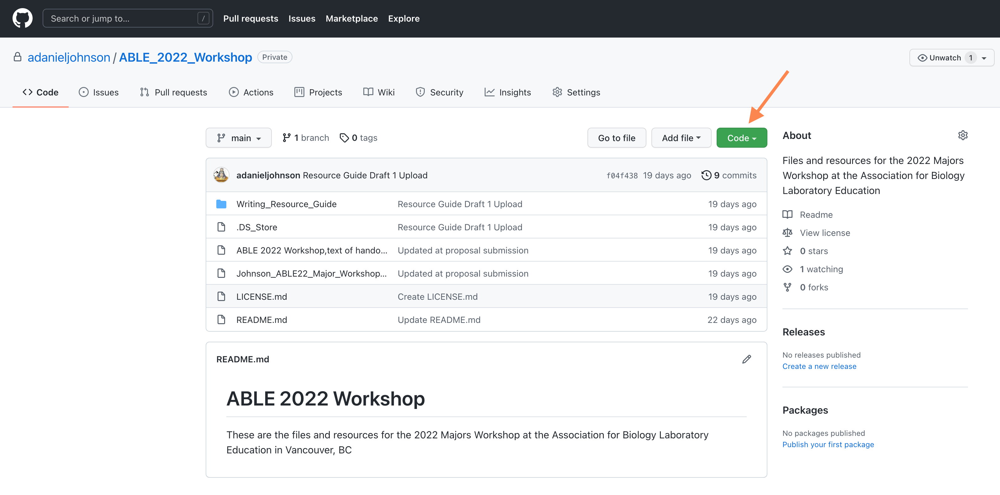
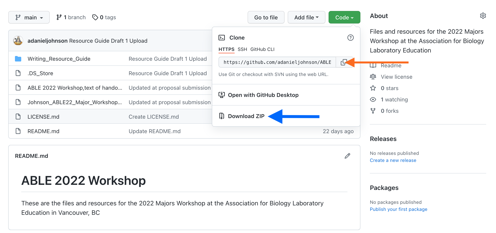
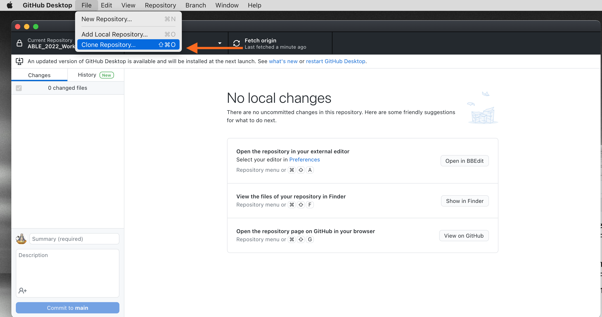
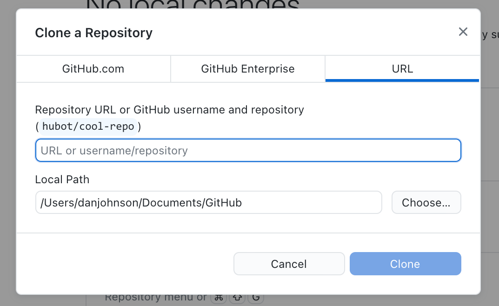
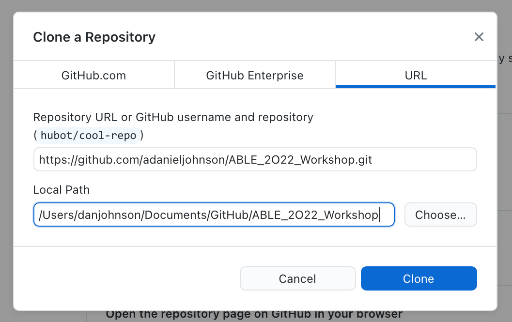
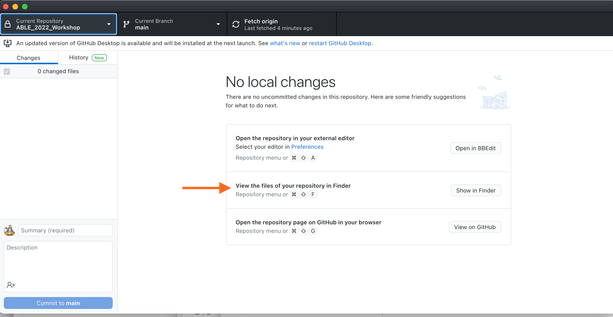
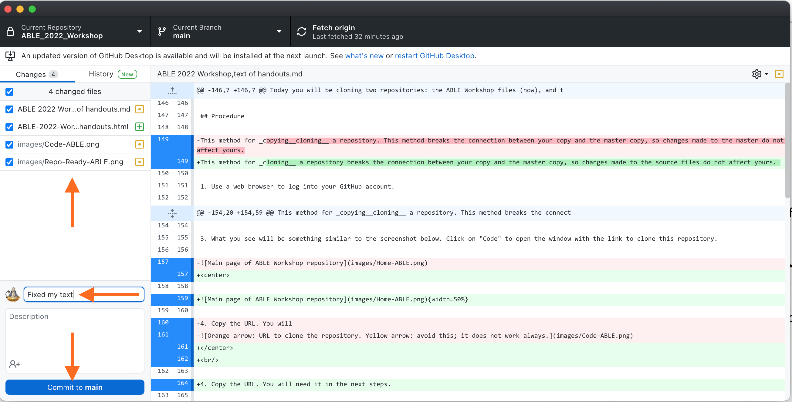
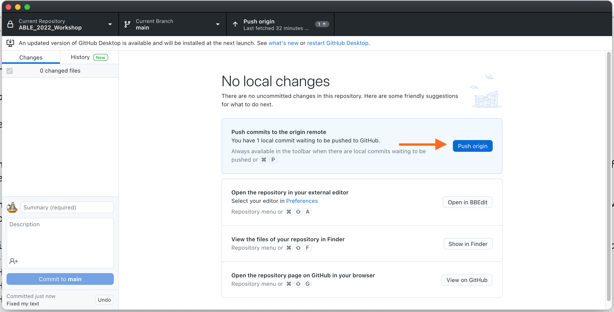
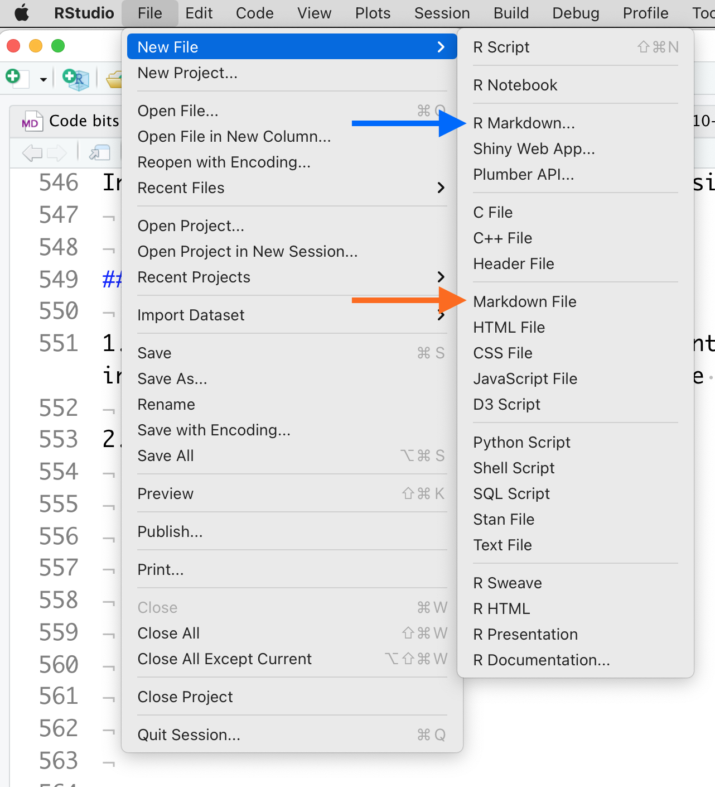
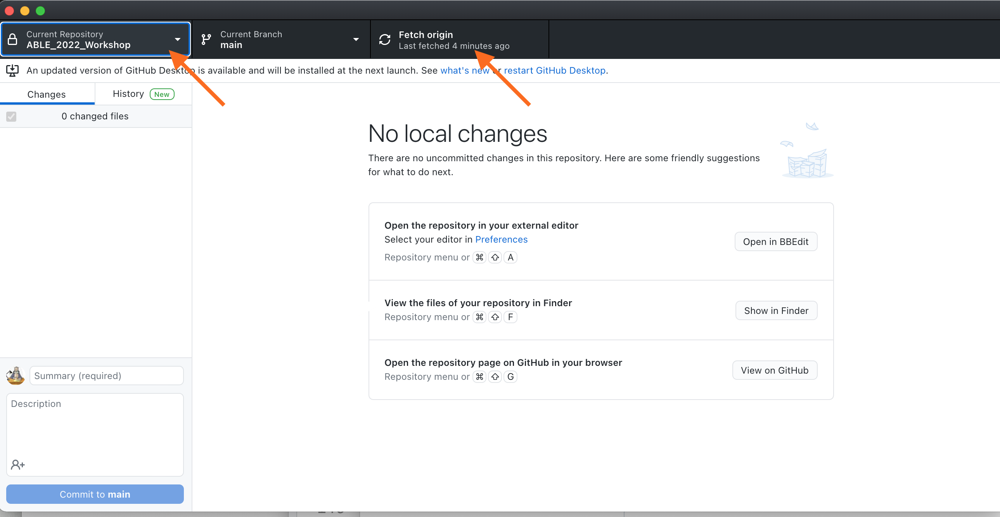

Major Workshop Application for ABLE 2022
Application Checklist
Application is a PDF or MS Word document that includes:
- [x] Workshop title and name(s)of presenters
- [x] Abstract describing the proposed workshop (300 words maximum)
- [x] Participant handouts (see note to reviewers below)
- [x] A list of equipment and supplies needed for a class of 25 students
- [ ] Notes for the Instructor (will be completed post-workshop)
- [x] Sample results (available from workshop repository)
- [x] A description of how you will present the laboratory to conference participants
- [ ] Student/TA evaluations of this exercise as a learning experience (not applicable)
- [x] Application deadline: November 30th.
Editing Notes
12/29/21
- Amy Marion and Sphida Migabo both approved the revised title and abstract.
12/21/21
I extensively revised the abstract and wrote a new title to bring more people into the workshop. I also made it clear that participants do not need any technical skills.
GitHub and R Studio are rock solid tools, but using online services and downloaded software is always a worry. In case they misbehave, I do have backup plans:
- If a participant does not want or is unable to register for GitHub, or if GitHub Desktop fails to install, they still can download the public conference repository containing all of the Markdown files without a GitHub account.
- I also plan to bring 4-5 flash drives that participants can take with them that have the complete set of Resource Guide files. They will not be able to complete the repository exercise, but this is not essential; I included the repository exercise more to introduce ABLErs to the concept of using shared repositories.
- If someone is unable to install R and R Studio, they will not be able to convert their own .md files to Word documents. If this happens, I plan to have them share with a partner using a flash drive, and let the partner do the conversion for them.
- In the very unlikely event someone does not have a plain text editor on their computer, I have provided links to Atom, Sublime, and Bluefish. All three are free cross-platform plain text editors. Atom handles Markdown particularly well.
The ABLE 2022 GitHub repository is live. I've already uploaded the Markdown document with the handouts for this workshop, plus the conversions to HTML and Word.docx. There will be a folder there with the finalized Writing Resource Guide .md files in a Markdown document, then converted it to MS Word for final formatting and submission. The original ".md" file is available to participants from this workshop's
Major Workshop Proposal
Title: Using Markdown and Free Tools to Write, Publish, and Share an Open-Source Scientific Writing Guide
Presenter
A. Daniel Johnson, Wake Forest University, Department of Biology, 1834 Wake Forest Road, Winston-Salem NC 27109, USA. johnsoad@wfu.edu
Abstract
At the 2021 ViABLE conference we presented our "six elements model" for teaching scientific writing in multi-section introductory biology courses. One of our essential tools is a standardized Scientific Writing Resource Guide that students and instructors use across multiple courses. In response to manyrequests that we share our Resource Guide, it now is available as an open-source book that others can modify to meet their individual needs.
To make our Guide easy to maintain and convert to different formats, we wrote it using Markdown. This lightweight markup language is ideal for writing lab materials because authors can write a text once, then output it in a variety of formats such as HTML5 for web pages, or Word/PDF documents for handouts. Groups of Markdown files can be combined to create interactive online books. Markdown takes ~20 minutes to learn, and marked text remains readable.
Participants in this workshop do not need any prior technical knowledge beyond basic computer skills. They will learn to use Markdown by editing existing pages from our Guide, creating new pages, and converting both into formatted Word and HTML5 documents. We will demonstrate how to use R Studio to assemble collections of Markdown documents into books, and how to use GitHub to manage and share writing project files.
Participants will leave with a complete copy of our Scientific Writing Resource Guide that they can revise to match their course requirements, the tools for writing and converting Markdown files to their preferred format, and a GitHub account where they can back up their project. Those interested can learn how to launch new book projects of their own, or contribute to our published edition of the Resource Guide.
Keywords: scientific writing, writing guidelines, Markdown, lab development tools, R Studio, web publishing
Introduction
The Scientific Writing Resource Guide
Scientific writing helps students learn to state problems and present claims precisely, summarize evidence to support those claims, and explain their reasoning. For many years, our Scientific Writing Resource Guide has been one of our essential tools for teaching scientific writing in multiple courses. The Guide focuses on writing a lab report that models a journal article because the same components are used in most other forms of scientific communication too. Our general format conforms to the Council of Science Editors (8e) standards, with some modifications to make writing easier for students just starting out. The Resource Guide includes sections on data visualization, basic biostatistics, and how to cite literature.
In 2021 we updated, expanded, and published our Writing Resource Guide. Our goal is to support two audiences: undergraduates learning the craft of scientific writing, and biology instructors who either teach scientific writing to undergraduates or supervise teaching assistants who do. Rather than try to make one guide meet the needs of every possible audience, we designed ours to be an evolving resource, and released it under terms of a Creative Commons BY-NC-SA 4.0 license {width=10%}.
The Guide is written in plain text using Markdown, so users can convert the Guide to whatever format is needed. Participants in this workshop will learn how to access and modify the Resource Guide using free tools. They can edit, extend or modify our Guide as needed to fit their particular needs and requirements, so long as they attribute its original source and do not use it commercially.
Why Use Markdown to Write Lab Documents?
Producing the shared Resource Guide introduced us to Markdown, a lightweight markup language that is extremely easy to use. Markdown is a great solution to the challenge of writing lab documents that may have to go to multiple destinations. With Markdown, authors write a text once then convert it into multiple file formats. It takes less than 20 minutes to learn most of the Markdown syntax needed for routine writing tasks, and marked-up text is still easy to read. Markdown can be converted to HTML5 so it plays well with most LMSs. It also can be converted directly into MS Word or PDF documents. With additional free tools, collections of Markdown documents can be compiled into interactive online books.
To demonstrate the versatility of Markdown, all of the handouts for this workshop were written in Markdown, then converted to MS Word for final submission. The original ".md" file is available in the "Sample Files"" folder in the workshop's ABLE 2022 GitHub repository.
About This Workshop
Participants in this workshop do not need any technical skills beyond basic computer skills. The exercises assume no prior knowledge of Markdown, the other tools, or computer coding.
Before the workshop participants should install the software tools. These tools are not essential, but make working with .md files easier. We will troubleshoot any installation problems at the start of the workshop.
In the first half of the workshop participants will make personal copies of the files for our Resource Guide. Then they will try creating and editing Markdown documents using two tools: R Studio and a plain text editor. Finally they will save their new files to their personal GitHub account. In the second half of the workshop, participants will learn how they can use either R Studio or standalone tools to render their Markdown pages into HTML and MS Word formats. I will demonstrate how R Studio plus Bookdown can turn a collection of Markdown files into a book that can be hosted online or printed.
Participants will leave this workshop with a complete copy of the Science Writing Resource Guide that they can revise to match their local needs, experience writing and editing Markdown, and a personal GitHub account from which to share their work with others or launch a book project (say, a new lab manual) of their own. Participants' new and edited pages will help us identify what additional topics should be added to our Resource Guide. Those who are interested can learn how they can contribute and publish new materials to our Guide.
Pre-Workshop Assignment: Install the Required Software
Give yourself enough time to install the software. GitHub Desktop takes 10-15 minutes to install. Registering for a new GitHub account takes 5-10 minutes. If you do not have it already, R Studio Desktop takes 10-15 minutes to install.
If an installation does not work, do not worry. We will troubleshoot installations at the beginning of the workshop, and we have workarounds if needed.
Install GitHub Desktop
GitHub is a no/low cost, secure collaboration and code sharing site that is popular with data scientists and program developers. GitHub also is becoming a popular hub for hosting blogs, static websites, and e-books (for example, Using Markdown inside R.) GitHub Desktop greatly simplifies installation, creating an account, and handling repositories.
Go to GitHub and follow their instructions for installing GitHub Desktop on your computer: Downloading and Installing GitHub Desktop
If you want to take a look around the application, Getting Started With GitHub Desktop is a good resource for learning what this program can do.
Register for a Free GitHub Account
GitHub Desktop should ask if you want to log into an existing account, or create a new one. If it does not do that automatically, go to the GitHub home page and follow the prompts to register. You do not need a private account for this workshop. If you start using GitHub regularly, a private account costs ~$50/year. GitHub definitely is a good investment; backups have saved me several times after I accidentally deleting important files.
Install R and R Studio Open Source Edition
If you have participated in one of ABLE's prior workshops on R or R Studio, you may have these programs installed already. If not, download and install R (the engine) before R Studio Desktop (the user interface) on your computer. Usually both installations run smoothly without you having to do anything.
- Download and install R.
- If you are a Windows user: Click on “Download R for Windows”, then click on “base”, then click on the Download link.
- If you are macOS user: Click on “Download R for (Mac) OS X”, then under “Latest release:” click on R-X.X.X.pkg, where R-X.X.X is the version number. For example, the latest version of R as of November 25, 2019 was R-3.6.1.
- If you are a Linux user: Click on “Download R for Linux” and choose your distribution for more information on installing R for your setup.
- Download and install R Studio.
- Scroll down to “Installers for Supported Platforms” near the bottom of the page.
- Click on the download link corresponding to your computer’s operating system.
For more detailed instructions, consult Installing R and R Studio, Step by Step
Exercise 1: Copying the Resource Guide Repository From GitHub
Background
GitHub stores files related to a project in a special folder called a repository (aka, "repo"). GitHub users can create separate repositories for different projects. Private repositories can only be seen by their owner and other GitHub users that the project owner specifies. Public repositories are available for anyone to view or copy, but users cannot add new files, or revise or remove existing files without the repository owner's express permission.
You do not have to be subscribed to GitHub to copy a public repository or use the files in it; you can download the contents of any public repository as a ZIP archive. However using GitHub to manage repositories can help you keep projects organized, and share them more efficiently.
When you first install GitHub, you create a dedicated space inside your computer for storing repositories. After that you can make a copy of any repository you have rights to see and store that copy in your own GitHub account. The repository will be copied to your local space, and backed up online. Your copy contains all of the files that were in the project's original repository.
There are three kinds of GitHub copies: clones, forks, and branches (which we will not use). A clone is a completely independent copy. When you clone someone else's repository, GitHub will tell you if there have been changes made to the original source repository, but those changes are not added to your copy, and any changes you make to your copy do not affect the source. We usually clone repositories when we want to use the files independently from their original authors.
A fork is a repository copy that stays connected to its parent. All of the users are working collaboratively on the same set of files at the same time. Unlike a Google document though, changes made by collaborators have to be approved by the owner of the repository. Once changes are approved, they are merged into the repository and "pushed" to all collaborators' copies of the repository. Forked repositories are useful when multiple authors work on one project. Every change is documented along with who made it. Individuals can work on separate files (and even different versions of the same file) without interfering with each other. Earlier versions of every file are available from the file archive.
In this exercise you will be cloning the ABLE 2022 Workshop repository. You can edit any page or add new pages without damaging the source files. If you make a mistake in a document and cannot fix it, just download a new copy. You'll also be using the Commit and Push commands. Do not worry about what they mean right now; we will talk in detail about them in Exercise 3.
Procedure
Use a web browser to log into your GitHub account.
Click on the URL (or type it in) to go directly to the ABLE workshop repository: https://github.com/adanieljohnson/ABLE_2022_Workshop. Alternatively, go to GitHub, look for the Search window at the top left, and enter adanieljohnson/ABLE_2022_Workshop. This is a shortcut to the project repository.
What you see will be something similar to the screenshot below. Click on "Code" to open the window with the link to clone this repository.
{width=80%}
- Copy the URL, and paste it somewhere. You will need it in the next steps.
{width=80%}
- Open GitHub Desktop. Go to File > Clone Repository.
{width=80%}
- Paste the URL you just copied into the window. Do not change the local path right now.
{width=40%} {width=40%}
- You should now have a copy of the files on your local hard drive. Use "View in Finder" to double-check.
{width=80%}
- Before continuing, you want to save a copy of your new repository and files to your personal online GitHub storage. On the main page of GitHub Desktop, you should see a list of files that have changed since they were last saved to your account. Give your update a SHORT name (yes, "Update" is fine.) Then click on Commit to formally save the changes locally.
{width=80%}
- To upload a permanent copy in your GitHub account, click on Push to origin.
{width=80%}
Now that your repo is saved, we can play. Open the folder named Sample Files. It contains .md files and the corresponding rendered HTML and MS Word formats. Open one of the .md files, then open the corresponding file with the .html or .docx extension.
Using Handout for Exercise 1 as your ".md to .html/.docx dictionary," try to translate the markup in the .md files. As you work, think about these questions:
- How hard or easy is it to read the original text in the .md file?
- How does the markup translate into a web page?
- How does the marked up text translate into a Word document?
If you make changes to your .md files, be sure to save them before going on to Exercise 2.
Handout for Exercise 1: Introduction to Markdown
Markdown was created as a way for writers to annotate thir text quickly to show formatting without having to embed full HTML tags. The goal with Markdown is to separate the content (words of the text) of a document from the format (headers, paragraphs, bullets, etc.) from the. By using one well-defined set of marking conventions (called the syntax), we can use converters to read a marked-up text and render it to many different formats. For example, the converter we will be using can read Markdown and export it in any of >55 text formats.
What Does Markdown Syntax Look Like?
Here is some text that has been formatted so you can see the the markup:
#### Level 4 Header - Formatting
There are two main kinds of text formatting:
* Inline formatting (\_italics\_, subscripts like H\~2\~SO\~4\~, etc.)
* Block- or paragraph-level formatting (headings, sub-headings, etc.)
The number of hash (#) marks indicates the level of the header. Lines of text are separated by an extra space. Words or blocks of text that have specific formatting are surrounded by a pair of symbols indicating the type of formatting to apply. Here is what the same text looks like rendered:
Level 4 Header - Formatting
There are two main kinds of text formatting:
- Inline formatting (italics, subscripts like H~2~SO~4~, etc.)
- Block- or paragraph-level formatting (headings, sub-headings, lists, etc.)
The rest of this handout explains the major markup codes. Keep a copy of this handout handy until you can remember the specific codes reliably.
Markdown Codes for Inline Formatting
The table shows how to mark text, and what it will look like when rendered.
| Inline Formats | How to Mark Them | How They Appear |
|---|---|---|
| Italics | _italicized_ word | italicized word |
| *italicized* word | italicized word | |
| Bold | __bolded__ word | bolded word |
| **bolded** word | bolded word | |
| Bold Italics | ___marked___ word | marked word |
| ***marked*** word | marked word | |
| Superscripts | Super\^script\^ed letters | Super^script^ed letters |
| Subscripts | Sub~script~ letters | Sub~script~ed letters |
| Horizontal rule | *** | Draws a line across page _____ |
| Inline code (not rendered) | `code block` | code block |
| Escape a special character | \*code block\* |
*code block* |
| Links to web pages | [text](link) |
RStudio |
| Links with URL | [link](link) |
https://www.rstudio.com |
| Links to embed local images | . |
 |
| Links to embed image from web | . |
 |
Codes for Block Level Formatting
Headers
Header levels are indicated with 1-6 hash marks followed by a space.
| Block Formats | How to Mark Them |
|---|---|
| Level 1 Header | # Level 1 Header |
| Level 2 Header | ## Level 2 Header |
| Level 3 Header | ### Level 3 Header |
| Level 4 Header | #### Level 4 Header |
| Level 5 Header | ##### Level 5 Header |
| Level 6 Header | ###### Level 6 Header |
How they render:
Level 1 Header
Level 2 Header
Level 3 Header
Level 4 Header
Level 5 Header
Level 6 Header
Paragraphs
Regular paragraphs need to be separated by a blank line, or they will run together. For example, a text written like this, without spacing lines:
There are several kinds of text formatting to explore.
Inline formatting text.
Block- or paragraph-level formatting.
Lists and quotes.
Looks like this when rendered:
There are several kinds of text formatting to explore.Inline formatting text.Block- or paragraph-level formatting.Lists and quotes.
Text written WITH spacing lines like this:
There are several kinds of text formatting to explore.
Inline formatting text.
Block- or paragraph-level formatting.
Lists and quotes.
Renders like this:
There are several kinds of text formatting to explore.
Inline formatting text.
Block- or paragraph-level formatting.
Lists and quotes.
Blockquotes are written after the ">" symbol. A new ">" symbol is needed after each line break. This text:
> "I thoroughly disapprove of duels. If a man should challenge me,
I would take him kindly and forgivingly by the hand and lead him
to a quiet place and kill him."
>
> --- Mark Twain
Renders like this:
"I thoroughly disapprove of duels. If a man should challenge me, I would take him kindly and forgivingly by the hand and lead him to a quiet place and kill him."
--- Mark Twain
Preventing Text From Rendering
Blocks of text that should be displayed as written and not be rendered are enclosed between three backticks. Blocked typed like this:
```
Block of text or code that should NOT be rendered, like this __bold__ word. ```
are rendered like this:
Block of text or code that should NOT be rendered, like this __bold__ word.
Hidden Comments
There are two ways to add comments to Markdown that will not display in the rendered text:
[//]: # (This comment in Markdown gets removed from both .html, and .docx)
<!--- This comment in Markdown is retained in .html, gets removed from .docx-->
Lists
Bulleted or unordered lists need to be separated from the preceding paragraph by a blank line. The items start with *, +, or -, and you can nest one list within another list by indenting the sub-list by four spaces. For consistency, it is best to make it a habit of using one character for main bullets, and the other two for sub-bullets.
A coded list looks like:
* First item
* Second item
+ First sub-item
- First sub-sub-item
- Second sub-sub-item
+ Second sub-item
* Third item
The output renders as:
- First item
- Second item
- First sub-item
- First sub-sub-item
- Second sub-sub-item
- Second sub-item
- First sub-item
- Third item
Ordered list items start with numbers, but the rule for nesting are the same as for unordered lists.
1. First item
2. Second item
1. First sub-item
1. First sub-sub-item
2. Second sub-sub-item
2. Second sub-item
3. Third item
The output renders as:
- First item
- Second item
- First sub-item
- First sub-sub-item
- Second sub-sub-item
- Second sub-item
- First sub-item
- Third item
The two formats can be mixed together:
1. First item
+ Sub-item
+ Sub-item
2. Second item
3. Third item
Renders as:
- First item
- Sub-item
- Sub-item
- Second item
- Third item
Numbered lists can be a bit fussy in Markdown. Sometimes they default to starting with #1. There is no simple and consistent way to force a list to start with a particular number. I usually fix this by editing the HTML or Word document directly, or just pre-number lists myself.
Math Expressions
Inline equations are written using standard LaTeX syntax, and enclosed by pairs of $ signs. This code:
$f(k) = {n \choose k} p^{k} (1-p)^{n-k}$
Renders an inline version of the equation as:
$f(k) = {n \choose k} p^{k} (1-p)^{n-k}$
Equations in display style are written enclosed in a pair of double dollar signs. This code:
$$f(k) = {n \choose k} p^{k} (1-p)^{n-k}$$
Renders as:
$$f(k) = {n \choose k} p^{k} (1-p)^{n-k}$$
Other Tips on Equations:
- This link is for a tutorial on writing LaTeX equations. Writing LaTeX equations
- This is a web page where you can write LaTeX equations using an online visual editor. Online equation builder
- Markdown equations sometimes fail to render correctly. Always check any formatted equations you have in a .md file the first time you try out a new rendering tool.
- Unlike mathematicians, we usually do not need to edit equations after typing them the first time. So I usually will render them once, take a screen shot, and embed them as images. As with everything, whatever simplifies your workflow is what you should do, as long as you do it the same way every time.
Handy HTML Bits
There are some formats that Markdown does not handle well. For example, subscript and superscript marks may not work on the first character or number in a word (like 3H) or on a whole word. Some other useful items are not in the GHFM syntax at all. You can fill in these gaps with a few basic HTML codes.
| If you need to... | Insert this HTML snippet | For this result |
|---|---|---|
| Force a superscript for a whole word or first character | <sup>super</sup>script |
superscript |
| Force a subscript for a whole word or first character | <sub>sub</sub>script |
subscript |
| Strike through text | <strike>This</strike> word |
|
| Add an extra space between items | |
|
| Add an extra line between items | <br> |
|
| Add a horizontal rule between lines | <hr/> |
_____ |
| Add Greek letters | α, η |
α, η |
This page is a good source for other HTML shortcuts. You csan find more information about special symbols here.
Learning More
These web resources can help you expand your Markdown writing skills. More are listed in the Notes for Instructors.
- GitHub's Introduction to GHFM
- Making Tables in Markdown
- Web-based Table Maker
- The Official Specification for GHFM. A very deep dive, but sometimes it is the best place to find answers to difficult formatting problems.
Exercise 2: Creating and Editing Markdown Pages
Background
Why Use Markdown Instead of MS Word?
Markdown is intended for the start of the authoring workflow. Unlike MS Word, it is assumed that text will be used and reused across multiple formats. MS Word is desktop publishing software, meaning it is designed to produce polished print documents at the end of the authoring and publication workflow. To that end, Word files include a lot of hidden styling information that limits reusability.
For example, if you have ever converted a long Word document into a web page, or combined several documents into one, you probably have seen unpredictable changes in format. This happens because of the embedded, hidden styling information. Markdown does not hide the formatting information, making it much easier to combine and convert documents.
What other advantages does Markdown have beyond "write once, reuse many ways"?
Markdown files are plain text, which means they are VERY small compared to Word .docx files. For example the Markdown file containing the full set of handouts for this workshop is 54KB; the corresponding Word file is 3.8 MB (70x larger.)
Markdown files do not have embedded images. They use an address to "call in" images when the document is rendered. One master set of images can be stored in a single location, and called into any Markdown document. If an image is updated, every document or web site that uses that image will use the new version the next time the file is generated.
When a Markdown file is converted to another format, all of the headers, bold words, etc., get tagged with appropriate styling codes for that document type. This greatly reduces time spent reformatting converted documents.
- Say you create a long document, convert it to Word, and decide you want to convert all 155 section headers from blue to red text in a different font. You do not have to convert each header one at a time; change the master style settings for headers once, and every header changes.
- If you copy/paste Markdown HTML into an existing site (like an LMS page), the added text adopts the styles of its new location.
Markdown is truly platform-agnostic. The same file can be edited on a Mac, a PC, and a Linux machine, and never have any compatibility problems.
Markdown and any tools needed to convert it are available for free.
How Do We Create Markdown Documents?
Unlike HTML, Markdown does not require any special code or starting text at the beginning of a new document. The only requirement is that the saved text file should have .md as the extension.
There are many ways to write Markdown files. You can:
- Use a plain text editor on your computer. If you need to share your documents in many different places or formats, or are not sure where they will go, writing them in a standalone text editor is probably easiest.
- Write them entirely inside R Studio. R Studio includes a fairly good plain text editor. If you plan to manage your files entirely through R Studio, it makes sense to write your text files there too.
- Write text files inside GitHub via a browser. If you want to be 100% sure you never lose a single word, and don't mind a few extra steps, writing directy in GitHub might be best. Files written in GitHub via a browser are saved immediately to their repository: no pulling or pushing needed. If you use R Studio or a standalone editor you will have to commit and push changes to GitHub from time to time.
Which will work best for you depends on your personal preferences, and how you plan to use the files. You may end up using some of all three methods. The goal of this exercise is to introduce you to each method, so you can find a workflow that feels comfortable to you.
Personal Tidbit: my own workflow changes with what I am doing. Right now, most of my writing ends up on our campus LMS so it needs to be plain HTML. Occasionally I write handouts that need to be in MS Word (.docx) format. I prefer to write drafts in a commercial plain text editor that shows Markdown codes in color. I work across multiple computers, so even early draft files go into a GitHub repository. That way I can access them anywhere.
When it is time to generate output, the text editor I use converts Markdown directly to plain HTML that I can copy/paste straight into our LMS. I use R Studio to generate MS Word documents and build online books. I rarely make PDFs anymore because they can be hard for screen readers to translate.
In this exercise you will try writing and editing Markdown texts using R Studio as a text editor, then using a standalone text editor. Your goal is to experience for yourself how Markdown behaves in different editing environments. One probably will feel more comfortable than the other; that is the way you should start out building your editing workflow.
Procedure
Editing Markdown Using R Studio
Open R Studio, and chooseFile > Open and navigate to the ABLE 2022 Workshop repository. Open to the file containing the Table of Contents page for the Writing Resource Guide.
Find 1-2 EXISTING pages you think you might want to edit or contribute to. Also find 1-2 topic that you do not see in the current pages that you think should be in the Guide.
Now open the folder named Writing Resource Guide. It contains the Markdown files (with the ".md" extension) for the full Writing Resource Guide. Locate one of the pre-existing .md files you wanted to edit, and open it.
- First look at the current structure. If needed, compare it to the markup guide in the handout from earlier. Do you see how the structure of the rendered file is encoded in the Markdown tags? (Remember, you can click the Preview tab at the top of the window to switch from Code to Preview modes.)
- Look for a section you want to edit. Make some changes, save, then see how your changes look using Preview mode.
Next you will start a new file. Choose File > New File > Markdown file.
{width=80%}
Enter some starting text. One or two words is enough.
Save the file in your ABLE 2022 Workshop repository. Give your file a name that reflects the topic you did not see. Include the .md extension. TIP: when you name files, do not include spaces. Write all file names in CamelCase (FileName1.md) or Snake_Case (File_Name_1.md)
Now you have a starting file that you can edit any way you wish.
- If you want to see how changes to the Markdown code affect it, click the Preview button at the top of the window.
- If the .md file will not display, you probably have an error in the format. Look at the bottom of the page for a tab called R Markdown. There usually is an error message telling you what went wrong.
When you are finished editing your two pages, save them both in the ABLE 2022 Workshop respository folder.
Close R Studio for now.
Editing Markdown Using a Plain Text Editor
Navigate to your ABLE 2022 Workshop repository folder. Usually it is located in your Documents folder.
Click on one of the .md files in the Writing Resource Guide folder to select it. This time you want to open the file in a plain text editor.
- For Windows, the default installed text editor is Notepad++.
- For MacOS, TextEdit is the default installed editor.
- You can open and edit .md files with any text editor you have installed, such as (Atom, Brackets, Bluefish, BBEdit, etc.)
- If you have no idea what text editor you have installed, just double-click the file. Your operating system will try to open the file with the appropriate program.
After you have edited an existing .md file, try creating a new one from scratch. Once again, create a new file for a topic you think is missing from the Table of Contents of the Resource Guide.
When you have finished, save both of your edited .md files.
OPTIONAL: Writing Directly Inside GitHub
The workflow for creating and editing .md files in a browser is a bit different. These instructions only work when you are online and logged into GitHub.
In a browser, log into GitHub (not Desktop). Go to the repository containing your cloned copy of the Resource Guide. At the top of the list, click on Add file. Choose Create new file.
Give your file a name that reflects the topic you did not see. Include the .md extenstion.
Enter some starting text. One or two words is enough.
At the bottom of the page is the Commit dialog. GitHub requires you to describe what you did when you save a file. That information goes in the first box, and is required. It might seem like extra trouble at first, but when you are making changes in critical files, these commit comments can help you track what changes you made and when. If there are multiple authors working on a file, each author's changes should say specifically what they worked on.
Commit the file directly to the master (branches and pull requests are not important until you are working on more complex projects.) TIP: when you name files, do not include spaces. Write all file names in CamelCase (FileName1.md) or Snake_Case (File_Name_1.md)
Now you have a starting file that you can edit any way you wish. If you want to see how changes to the Markdown code affect it, simply click the Preview tab at the top of the window.
Next, go back to the Table of Contents and find a page you think you might want to edit. Locate the corresponding pre-existing .md file, and open it.
- First look at the current structure. If needed, compare it to the markup guide in Handout 3. Do you see how the structure of the rendered file is encoded in the Markdown tags? (Remember, click the Preview tab at the top of the window to switch from Code to Preview modes.)
- Look for a section you want to edit. Make some changes, commit the file to your local repository, then see how your changes look using Preview mode.
Writing Tips and Tricks
- Always start Markdown pages with a Level 1 header that is the title of the document. I reserve the Level 1 header just for that purpose. This does not seem very useful at first, but it becomes essential when you start compiling multiple .md files into longer documents or books.
- It is tempting to remove spaces between lines of text in .md files. BAD idea! Markdown relies on blank lines to keep track of blocks of text. When Markdown is rendered, extra blank lines are deleted automatically.
- When editing inside GitHub, pages may extend beyond the screen. If so, look at the upper right of the editor window for a drop-down that says No wrap. Click it and choose Soft wrap. This keeps sentences and paragraphs from running off the right side of the screen.
Exercise 3: Updating Your Local and Master Copies of the Resource Guide
Background
You have edited and saved your .md files locally. Now the local repository on your computer is ahead of the version in your GitHub account! In this exercise we'll synchronize the two repositories by pulling and pushing files between them.
Do I HAVE to use GitHub? Nope, it is entirely up to you. You can copy files from any public repository on GitHub; only the private repositories are restricted to account holders. If you never share files with other people, only work with local copies, and have a good back-up service already, then you may not need it.
GitHub does have benefits though. You can share files with others, get their suggestions, then decide whether or not to incorporate them. If you work across multiple computers (home and work for example), GitHub can help ensure you always are working on the most recently updated files. You also can set up a personal web site for each repository you have. If you are interested in including more R or data science in your labs, then you definitely want to become comfortable using GitHub.
GitHub has two functions that help you keep repositories in sync: pull (sometimes called fetch) and push. These commands can be confusing, but they are at the heart of what makes GitHub so powerful.
When you pull (or, fetch) a copy of a repository, GitHub compares the versions of the files in the repository on its servers and your local computer. If the server version does not match the local version exactly, GitHub will try to download the newer version and update the older version on your local computer. If there are newer versions in BOTH locations, GitHub will ask you to pick one to be the new "correct" version.
Say you have been editing several .md files using the text editor on your computer. When you commit the files, you are telling GitHub "these are the newest versions, and what everyone should be using from now on." GitHub dutifully stamps them with a time and location code, and stores them locally. You need to push the files to tell the main GitHub server to update its copies.
When you push files, the server compare its copy of each file to the data stamp on the one you pushed. If there are changes in the server copy that are not in yours, GitHub will stop and tell you that you need to pull the changes already logged by the server and merge them with your local changes first. Then you can push the newest version of each file back to the server. This is a quirk of GitHub; usually pulling from the server resolves any conflicts.
Why does GitHub use so many different commands? Why not just save a file instantly and everywhere, like Google does? If you have ever had someone change a Google document you just finished editing back to what you deleted, you know why. GitHub's strategy is designed for code writers and editors. There has to be one "correct"" version, and one person with the authority to make the decision what files are correct. Committing a file only saves it to the local copy of the repository you happen to be working in. Pushing a file changes it on the main server, and on all of the forked copies.
Procedure
Open GitHub Desktop. If you are not logged in to your account, do so now.
In the upper left of the work window, click on Current Repository. Pick the ABLE 2022 Workshop. You now should see a list of files that changed. The files you created or edited should be listed.
{width=80%}
In the upper part of the work window, click on Fetch Origin. This issues a Pull command; it pulls information about the server version of the repository and compares the two versions.
You should see a list of files that have changed since they were last saved to your account. Give your update a SHORT name. Then click on Commit to save the changes locally.
{width=80%}
- To update the copy in your GitHub account, click on Push to origin.
{width=80%}
- If you click on Fetch Origin again, you should get a message saying All files up to date. This means your files in the local copy and the server copy of the repository all match.
Tips and Good Practices
How often should you commit and push? It is up to you, but generally you should commit every 30-60 minutes, or right after you complete a set of major edits. You might only push changes to GitHub once or twice a day, though more often does not hurt anything. It is a good habit to push to GitHub when you finish working for the day.
Why commit so often? GitHub creates a detailed record of every Commit and Push command in your account that includes which files were changed and how. If you are editing a large file or several files and accidentally delete some important text, you can use the repository history to reconstruct the missing pieces. The more often you Commit, the finer grained the record of changes.
Exercise 4: Generating Your Output Documents
Background
In Exercises 1-3 you learned how to create, edit, and manage the Markdown files. Now we are going to create documents with those files.
Markdown is converted to other document formats using Pandoc, a "universal document converter." It can read many different document file types, then convert one format to another. Some file types get fussy when converted, but Markdown and Pandoc play very nicely together.
There are several ways to access Pandoc; you do not need to work with it directly. In this exercise you will be using a standalone web-based converter to create clean HTML, and using R Studio to create MS Word documents. I will demonstrate two other routes: using the command line to build single files, and using R Studio's bookdown package to compile single files into an e-book.
Converting Text.md to Text.html
Many plain text editors (though oddly, not R Studio) can convert Markdown to very compact plain HTML. If your text editor does not have this feature, this web-based Pandoc converter works well.
Go to the MD to HTML Converter at https://ashkanph.github.io/md-to-html/.
In the upper right corner, use Browse to find your local GitHub folder, and choose one of your recently edited .md files.
The .md file will be converted to .html and displayed.
Use the Save as HTML button to write a copy of the file in .html back to your local GitHub folder.
If you open the version of the file with the .html extension in your plain text editor, you will see it has been rewritten using HTML markup. You can copy and paste the HTML code into most LMS pages. Alternatively, you can share the file itself with others; they can open it in any web browser.
Why not use R Studio for HTML? When R Studio generates standalone HTML, it embeds the raw code for every image plus a LOT of extra styling code. For example, the HTML file for the handouts for this workshop that was generated using the Ashkanph converter was 63 Kb. The same HTML file generated using R Studio was 6 Mb. This problem goes away when R Studio creates books; the HTML files are very compact, because they reference separate styling and image files rather than embedding them.
There are many free converters available. Another very good one is Markdown It, which has a very user-friendly interface, but requires copy/pasting the text rather than choosing a file. Dillinger shows the Markdown code in a window next to either the HTML code or the styled text. Rendered Markdown can be exported as HTML, but like R Studio, Dillinger includes some extra styling information.
Converting Text.md to Text.docx
R Studio is very good for converting .md files to well-formatted Word documents.
Open R Studio, and go to the workshop files. Open one of the files you edited or created.
At the top of the screen, open the pulldown menu next to Preview and choose Word document.
 {width=80%}
{width=80%}
R Studio will call Pandoc, generate a pre-formatted MS Word .docx file, then save it to the same directory where the .md file is located.
Click on the .docx file to open it in MS Word.
MS Word files are formatted using a standard template. To format documents a different way, create a template file with the header and text styles that you want. When newly generated documents are copy/pasted into the template file, the text will change to the styles you set.
Demonstration 1: Running Pandoc From the Command Line
It is very easy to install and run Pandoc from your computer's command line, and it generates both .docx and .html files. If you would like to try it yourself:
Go to the Pandoc installation page for instructions to download and install to your computer.
Use the following Terminal commands to convert from .md to .html or .docx format. The commands are the same, except for the extension on the output file.
pandoc -s /filepath/Input_Filename.md -o /filepath/Output_Filename.html
pandoc -s /filepath/Input_Filename.md -o /filepath/Output_Filename.docx
Pandoc is fussier about rendering PDFs. First, it does not tolerate markup errors, and may refuse to convert a file. Second, you must install a pdf-engine then call it in the command. Look at the example below:
pandoc -s --pdf-engine=xelatex /filepath/Input_Filename.md -o /filepath/Output_Filename.pdf
The pdf-engine defines what the format will look like. This particular PDF engine's default layout and fonts look outdated and can be hard to read. Changing them requires some deeper coding work, which is why I do not recommend using Pandoc for creating occasional PDFs. It is quicker to render a file in MS Word then save it as a PDF.
Demonstration 2: Using Bookdown to Compile Documents Into Books
R has powerful libraries for creating online materials. The bookdown package (which uses knitr plus Pandoc) combines individual .md files into full length technical books. The Home page for the R Bookdown package has examples of books that were created this way.
There is not enough time for you to set up your own GitHub-hosted book from start to finish. Instead, we'll take a short tour through the back end of the SWP Writing Resource Guide and see how R Studio can convert a collection of separate .md files into an integrated book.
We also will talk about what is missing from the Resource Guide that you added, and your suggestions for improving it.
Next Steps
Today's exercises introduced you to most of the tools you need to start using Markdown.
If you want to use our Writing Resource Guide in your own courses, you now have the original documents and all the tools you need to edit it to suit your program needs. If you are interested in writing new material or helping us expand the Guide, let us know.
If you want to try building your own online book, go to our Bookdown Demo repository, which is an unmodified fork of a demo by bookdown's creator, Yihui Yue. Clone this to a new repository, and you have a complete operating skeleton for a book. Authoring Books and Technical Documents With R Markdown describes how to customize it as you desire.
Two other books that can help you continue developing your skills are:
Links to Resources
Links to packages and resources described in the workshop handouts are provided again here for convenience, along with additional resources.
Getting Started
Plain Text Editors
- Atom Text Editor is free from GitHub, and can be set up as a Markdown-native editor. It was designed for coders, so can be intimidating to set up.
- Brackets is popular with many code and text wranglers.
- Bluefish is an older editor but is still actively maintained.
- Google Text Editor is available to anyone with a Gmail account. It is not as full-featured as many editors, but does recognize Markdown natively.
Using GitHub
Markdown Syntax and Add-Ons
- GitHub's Introduction to GHFM
- Quick Guide to Mastering Markdown *Extended Syntax for Markdown
- Emoji cheat sheet.
There are two ways to add emoji to Markdown files: copy and paste an emoji into the Markdown-formatted text, or type emoji shortcodes. GHFM does not support emoji shortcodes, so copy/paste from this cheat sheet is your best option. - Making Tables in Markdown
- Web-based Markdown Table Maker
- HTML shortcuts
- HTML special symbols
- Writing LaTeX equations
- Online equation builder
- Official Specification for GHFM, if you want to see the complete documentation.
File Format Converters
- HTML5 for the web:
- MS Word documents:
R and R Studio; Bookdown Package
- Install R.
- Install RStudio.
- Installing R and R Studio, Step by Step
- Using Markdown inside R
- Home page for the R Bookdown package
- Guide to using Bookdown
Commercial Products
- Marked 2 is an inexpensive desktop application for previewing Markdown. Mac only.
- Markdown Pad is similar to Marked 2, but for Windows.
- Typora lets you write and view Markdown immediately. Costs $15. Works well for Word documents, but adds extra code to HTML.
- Caret is a newer cross-platform tool.